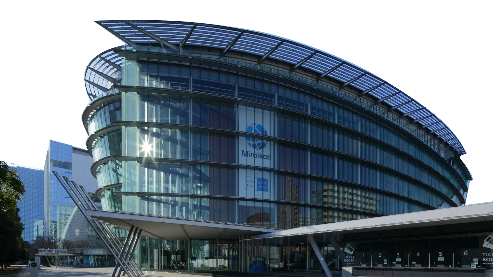
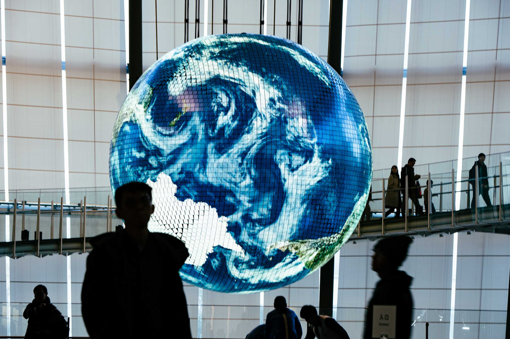

Venue

Miraikan – The National Museum of Emerging Science and Innovation
ASSETS 2027 will be held at Miraikan – The National Museum of Emerging Science and Innovation, located in Odaiba, Tokyo’s waterfront area.
Miraikan is Japan’s national museum dedicated to science, technology, and innovation. Through exhibitions, research activities, and public programs, the museum provides a space for exploring emerging technologies and discussing how science and technology can shape our future.

Getting to the Venue
Tokyo has an extensive public transportation network, and we recommend using trains to travel to and from the conference venue.
Miraikan is accessible by two main train lines: the Yurikamome Line and the Rinkai Line.
By Yurikamome Line
The Yurikamome is the most convenient option for reaching Miraikan.
The two closest stations are:
- Telecom Center Station – approximately a 4-minute walk to Miraikan
- Tokyo International Cruise Terminal Station – approximately a 5-minute walk to Miraikan
If you are traveling from central Tokyo, you can take the Yurikamome from Shimbashi Station. The journey from Shimbashi to Tokyo International Cruise Terminal Station takes approximately 16 minutes.
If you are coming from the Toyosu area, the journey from Toyosu Station to Telecom Center Station takes approximately 12 minutes.
By Rinkai Line
The nearest Rinkai Line station is Tokyo Teleport Station, approximately a 15-minute walk from Miraikan.
The Rinkai Line provides convenient connections from several major areas of Tokyo, including:
- Shibuya → Tokyo Teleport: approximately 19 minutes
- Shinjuku → Tokyo Teleport: approximately 24 minutes
- Ikebukuro → Tokyo Teleport: approximately 29 minutes
Some Rinkai Line trains operate directly onto the JR Saikyo Line, making this route particularly convenient for attendees staying around Shinjuku, Shibuya, or Ikebukuro.
From Tokyo Station
One convenient route is:
Tokyo Station → Shimbashi Station → Tokyo International Cruise Terminal Station → Miraikan
From Shimbashi, transfer to the Yurikamome Line toward Odaiba and Toyosu. The total train journey from Tokyo Station to Tokyo International Cruise Terminal Station is approximately 28 minutes, followed by a short walk to Miraikan.
From the Airports
Tokyo is served by two major international airports: Haneda Airport (HND) and Narita International Airport (NRT).
From Haneda Airport (HND)
Haneda Airport is the closest airport to the conference venue.
The journey to Miraikan takes approximately:
- 50 minutes by public transportation
- 20 minutes by car or taxi, depending on traffic
One convenient public transportation route is to take the Tokyo Monorail toward central Tokyo, transfer at Tennozu Isle Station to the Rinkai Line, and travel to Tokyo Teleport Station. From Tokyo Teleport, Miraikan is approximately a 15-minute walk.
Depending on your destination and luggage, taxis may also be convenient, particularly when traveling in a group.
From Narita International Airport (NRT)
Narita Airport is located farther from central Tokyo.
The journey to Miraikan takes approximately:
- 100 minutes by public transportation
- 60 minutes by car or taxi, depending on traffic
Several train and airport bus options connect Narita Airport with central Tokyo and the Tokyo waterfront area. We recommend checking current routes when planning your trip, as airport bus schedules and destinations may change.
Getting Around Tokyo
Tokyo’s rail network is operated by several companies, including JR, Tokyo Metro, Toei Subway, and private railway operators. Although the network may initially appear complex, most stations have signs and announcements in both Japanese and English.
Transportation IC cards such as Suica and PASMO can be used on most trains, subways, and buses in the Tokyo metropolitan area. Rather than purchasing a separate ticket for each trip, you can simply tap your IC card or compatible smartphone when entering and leaving a station.
Accessibility
Miraikan provides detailed information about accessible routes from its three nearest stations.
For wheelchair users, Telecom Center Station is the closest option. The accessible route to Miraikan is approximately 0.35 km and is relatively flat.
Accessible routes are also available from:
- Tokyo International Cruise Terminal Station – approximately 0.6 km
- Tokyo Teleport Station – approximately 1.2 km
Miraikan provides maps and step-by-step photographs of these routes on its website.
We will provide additional accessibility information for conference attendees, including information about transportation, the conference venue, and recommended accommodations, closer to the conference.